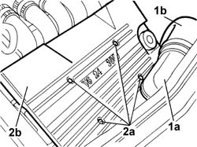

1016A42 LEFT CYLINDER HEAD IGNITION COIL COVER - R.R.
- Path
- Procedures > 10 ENGINE > 1016 CYLINDER HEAD(S) > 1016A TAPPET COVERS > 1016A42 LEFT CYLINDER HEAD IGNITION COIL COVER - R.R.
- Kind
- repair procedure (removal / refitting; the operation number is the code)
- Applies to
- engines: 2.0 TB, 2.4 20V, 3.0 V6, 3.2 V6; all production periods
- Interactive page
- https://sloeber94.github.io/elrnDB-lThss/en/#/184694
Applies to: engines: 2.4 20V; all production periods
- Procedure not yet available
Applies to: engines: 3.0 V6, 3.2 V6; all production periods
 Removing
Removing
 Refitting
Refitting1. Disconnect the hose (1b) between the air intake and the filter from the air intake (1a).
2. Undo the bolts (2a) and remove the ignition coil cover on the left cylinder head (2b).

Applies to: engines: 3.0 V6, 3.2 V6; all production periods
Refitting
Removing- Position the ignition coil cover on the cylinder head and secure it using the bolts.
 | Value - daNm | Fastening | Component | Ø |
|---|---|---|---|---|
. | 1.2 | Bolt | IGNITION COIL/REEL COVER/S | M7 |
- Connect the hose between the air intake and the filter
Topics that link to this page (37)
- 0010T44 AUTOMATIC TRANSMISSION FLUID - Change
- 0010T45 AUTOMATIC TRANSMISSION FLUID - Check level and top up if necessary
- 1004B17 POWER UNIT with automatic transmission, complete with support frame, front suspension- R.R. for versions with air conditioning
- 1016A30 Left TAPPET COVER - R.R. and Replace gasket
- 1016A36 Left and right TAPPET COVERS - R.R.
- 1016A46 Ignition COILS COVER on cylinder head - R.R.
- 1016D20 LEFT CYLINDER HEAD - R.R. and replace gasket
- 1016D24 RIGHT CYLINDER HEAD - REMOVING-REFITTING AND REPLACING GASKET
- 1020D12 Crankshaft oil seal FRONT COVER - R.R. and Replace seals
- 1020D18 Front crankshaft COVER OIL SEAL - Replace
- 1020D39 Flywheel side OIL SEAL - Replace for versions with automatic transmission
- 1024B20 ENGINE FLYWHEEL - R&R for versions with automatic transmission
- 1032B10 TOOTHED timing BELT - R.R. for timing adjustment or replacement
- 1032B55 LEFT HEAD TOOTHED DRIVEN PULLIES - R.R. FOR VERSIONS WITH AIR CONDITIONING
- 1032B58 DRIVEN TOOTHED PULLIES
- 1032C32 TIMING BELT FIXED TENSIONER - R.R.
- 1032D12 Timing system protective COVER(S) - R.R.
- 1036E10 CAMSHAFTS in left cylinder head - R.R. on vehicle
- 1036E15 Right cylinder head CAMSHAFTS - R.R. on vehicle for versions with air conditioning
- 1036E54 OIL SEALS FOR LEFT CYLINDER HEAD CAMSHAFTS - REPLACE
- 1036E58 OIL SEALS FOR RIGHT CYLINDER HEAD CAMSHAFTS - REPLACE
- 1056B90 SYSTEM CABLE LOOM - R.R.
- 1088C10 WATER PUMP - R.R.
- 2130A38 Automatic transmission HEAT EXCHANGER - R.R.
- 2130A70 Rubber hose with built in flexible pipe for directing coolant to automatic transmission oil heat exchanger
- 2130A74 Flexible water return pipe to crankcase between rigid pipe and automatic transmission fluid heat exchanger
- 2130B40 Gear selector SOLENOID VALVE UNIT - R.R.
- 2130B48 GEAR SELECTOR on automatic transmission - R.R.
- 2135A12 Gear engagement CABLE - R.R.
- 2135B58 ELECTRONIC AUTOMATIC TRANSMISSION system WIRING - R.R.
- 4130B94 DUPLEX PIPES from cooling coil or heat exchanger radiator - R.R.
- 4130C14 Converter VALVE ON power steering box - R.R.
- 4410D10 Front suspension FRAME - R.R.
- 5510C14 Ignition COILS - R.R.
- 5510C16 Left cylinder head IGNITION COILS - R.R.
- 5510C45 DETONATION SENSOR (one- remaining) R.R. after Op. 5510C44
- 5510D10 SPARK PLUGS - R.R.